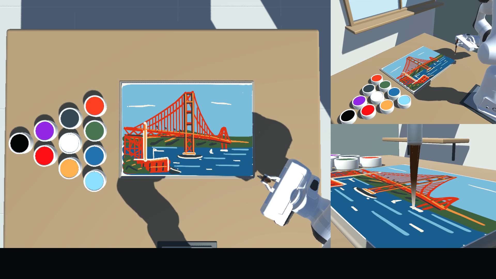
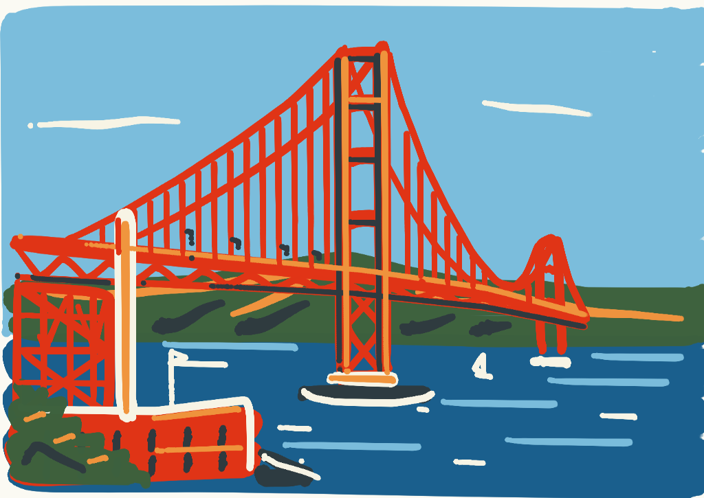
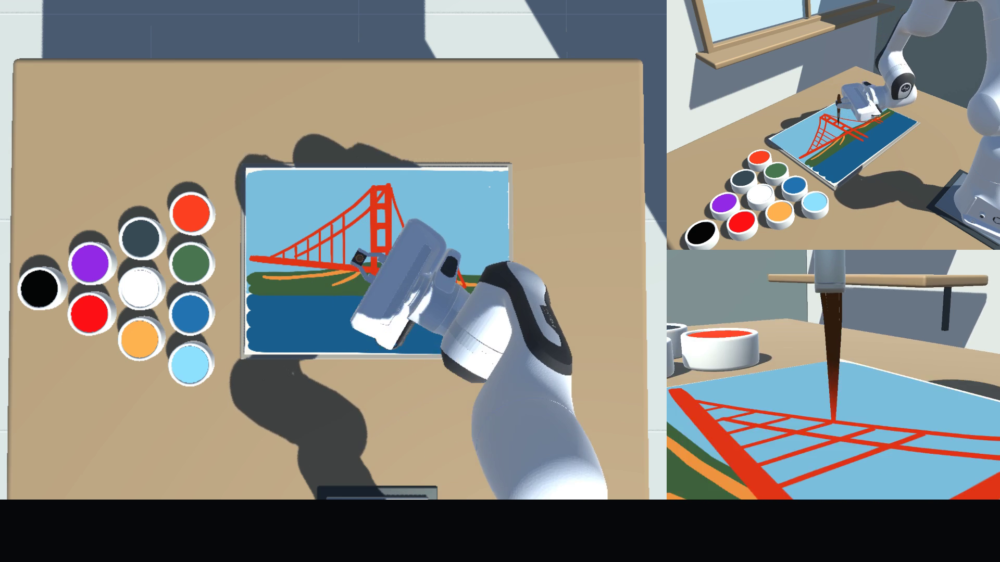

RESULTS AVAILABLE
↗Golden Gate Bridge
Reference-image reproduction. A shared photograph tests the translation from visual structure to deliberate physical strokes.
AN AGENTARK BENCHMARK · v0.1 RESEARCH PREVIEW
Give a language model two cameras, a simulated robot arm, and a paintbrush. Can it turn what it sees into a painting?
Beyond the benchmark, let the robot paint your own ideas from a text prompt, reference images, or both. Custom painting guide on GitHub
In-context learning: one session, three sequential rounds.
Fresh canvas each round. Experience carries forward.

Paint a pelican riding a bicycle.
No reference image is attached. The model still sees the two fixed workspace cameras.

01 — THE GOLDEN GATE STUDY
Compare how models paint and adapt through the session. Every round-end canvas is preserved, along with the actual run settings.
IN-CONTEXT LEARNING
Each round starts on fresh paper. The same agent carries experience from earlier rounds into the next through its context and memory. Model weights stay fixed.
Loading the recorded collection…
The benchmark author's personal ranking. This qualitative ordering reflects the author's judgment. All three ICL rounds remain available for your own comparison. How results are presented ↗
THE EMBODIED PART
The model receives two fixed workspace camera images and flange pose feedback. It plans timed 3D movements; the simulated robot and soft brush turn them into marks. The recording adds a brush-follow close-up for human viewing.
WATCH THE PAINTING PROCESS
One player · 11 models · 6× playback

Two workspace views, flange pose, and public action feedback. The reference is attached at the start of each round.
Infer the workspace, find paint and paper, and choose a sequence of strokes using visual feedback.
Submit 1–32 timed flange waypoints in robot-base coordinates, up to 20 simulated seconds per batch.
Inspect the next observation. Keep working, submit early, or carry experience into the next blank canvas.
Fixed conditions: seed 107 · Linux env 1.0.5 · fixed brush and paper · unlimited paint · 120 Hz control / 480 Hz physics · time scale 1.
Full benchmark protocol ↗One shared harness for every model. All 11 models use AgentArk's built-in SimpleAgent. OpenRouter, Volcengine Ark and the Codex SDK provide model access; they do not replace the harness. The agent loop, tool and observation interfaces, task conditions and environment action budget are shared. This keeps the comparison fair at the harness and task level.
Rows follow this task's personal ranking. The three ICL rounds form one continuous session: fresh paper each round, retained experience, fixed model weights. A public ICL round corresponds to a runtime attempt. Actual reasoning settings and output-limit behavior are recorded below.
| Personal rank | Model / access backend | Reasoning setting | Actions · ICL rounds 1 / 2 / 3 | Run notes |
|---|
The task's submission reward records saving/completion. It does not score fidelity or artistic quality. Scope and limitations ↗
LOOK CLOSER
Compare models at the same ICL round. Each model's rounds belong to one continuous session, with experience carried forward. Open a painting to inspect the full progression.
ONE ROBOT. MORE THAN ONE QUESTION.
Reference-image reproduction. A shared photograph tests the translation from visual structure to deliberate physical strokes.
A text-only target with visual workspace feedback. Explore three completed rounds per model, their recordings, and actual run settings.
Try text, a reference image, or multiple references. Custom targets and altered physics are experiments with their own conditions.
REPRODUCE IT. THEN EXPERIMENT.
The same AgentArk evaluator handles inference, memory, recording, and replay. Start with the locked environment, or bring your own target.
Choose a model record and replay its painting process with GPU rendering. Follow the camera views, actions and results in the viewer. No model API key is needed.
Open Golden Gate Colab ↗To evaluate a new model using your own API access, use the model evaluation notebook ↗.
python scripts/prepare_run.py \
--case golden_gate --model solPreparation is offline and does not call a model. Follow the quickstart to install the runtime and execute the generated config.
Installation & first run ↗Replay a recorded run ↗The standard track fixes the physics. The environment also supports configurable brush attachment, paint behavior, and other task parameters; altered settings must be reported separately.
OPEN, INSPECTABLE, REPLAYABLE
Watch every model's painting process, then replay recorded model runs in Colab to inspect the interaction yourself. A narrated explainer is coming later.